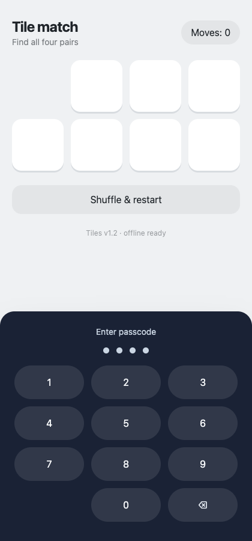
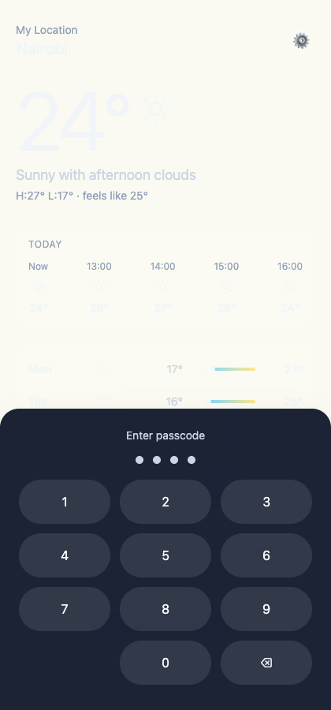
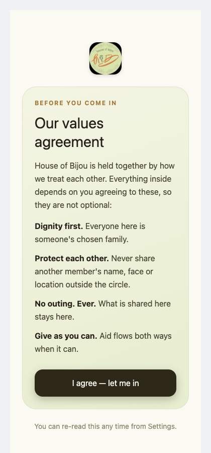
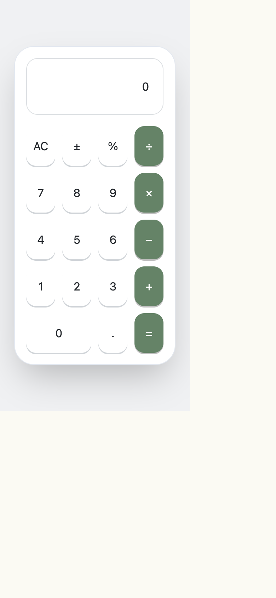
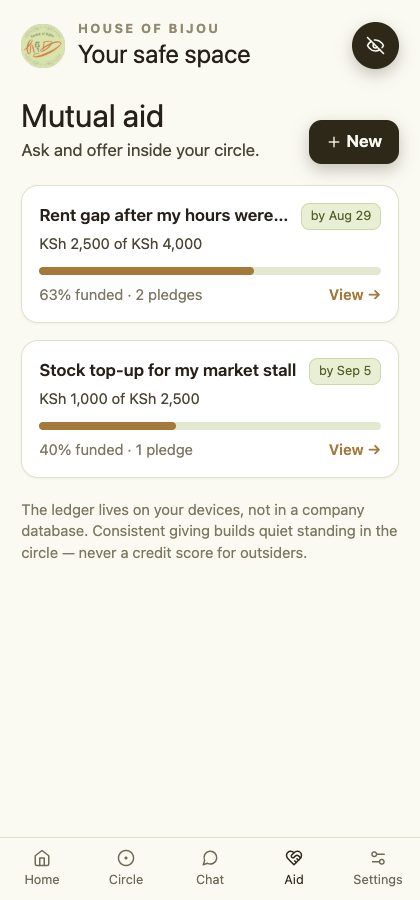
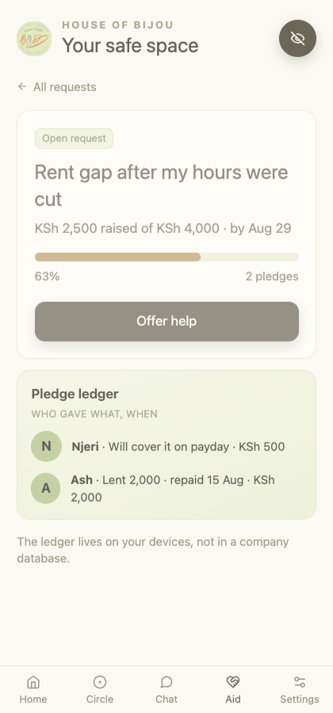

A mobile walkthrough of the Rails MVP against the four-stage brief. This page records what is implemented today and keeps future layers visible without disguising their status.
11captured MVP views
16MVP screens in brief
31screens across roadmap
19tests passing
Progress against brief
Four stages, one honest status.
01 · Weeks 9–16
MVP
Stealth access, dashboard, circle, panic, chat, aid, stories, settings and coordinator surfaces are present.
Implemented · internal test02 · Month 4
Alpha
Feedback, 2FA and biometric screens remain planned additions to the live safety layer.
Planned · closed beta03 · Months 5–8
Beta
Wallet, transfers, ledger, income guidance and USSD are roadmap work.
Planned · economic resilience04 · Month 9+
Public launch
Governance, advocacy, partner directory and cooperative ownership are roadmap work.
Planned · community-run
MVP checklist
What to review now
Mobile walkthrough
Captured screens

Tile-match decoyOne of three working skins — triple-tap reveals the PIN pad (review PIN: 2500)

Weather decoyFully functional decoy app hiding the launcher

Values gateFirst screen after unlock

OnboardingPseudonym and avatar colour — no real namesDashboardReal home hubPanic alertGPS capture + fan-out to circle contactsChatRooms with disappearing-message timers

Mutual aidRequest feed

Aid detailClaim ledger and fulfilment flowCommunityStories and votes under pseudonymCoordinatorLive alerts, coordinates and delivery status